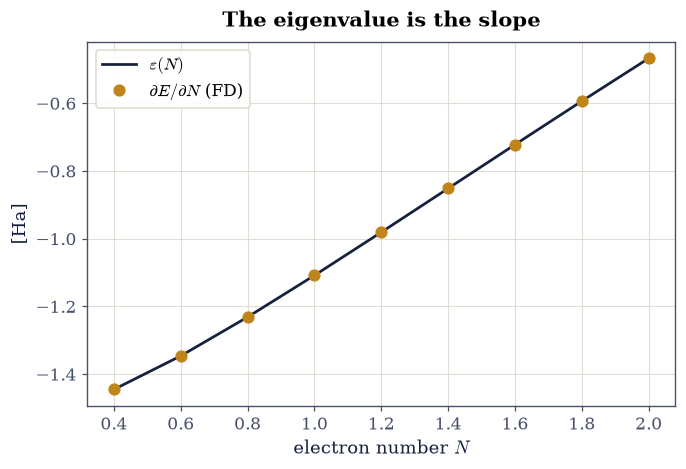
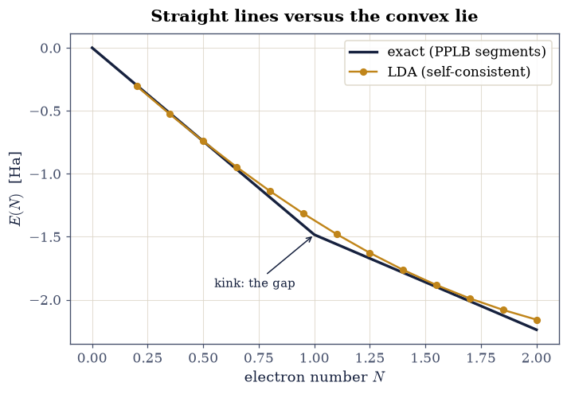
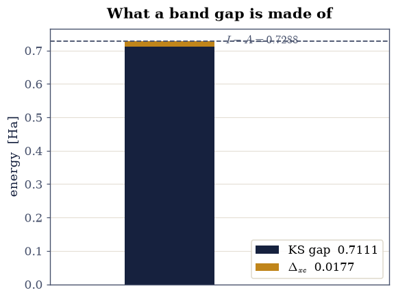

8.8 Exact Conditions and the Band-Gap Problem#
Notebook overview#
Every failure catalogued in §8.7 — eigenvalues too high, potentials too shallow, hydrogen repelling itself — turns out to be one failure wearing different clothes, and this notebook undresses it. The deep question is what the energy does as the electron number varies, integers and fractions alike. Perdew, Parr, Levy, and Balduz [PPLB82] answered it exactly: the exact \(E(N)\) is a sequence of straight-line segments between the integers, with derivative jumps at them — and the sizes of those jumps are ionization energies, electron affinities, and, in solids, the band gap itself. The local density approximation replaces the segments with a smooth convex curve, and every frontier pathology follows from that single geometric mistake.
The laboratory of §8.2 makes all of it computable. Janak’s theorem (\(\partial E/\partial f_i = \varepsilon_i\)) is verified to finite-difference precision on the from-scratch LDA of §8.7 run at genuinely fractional electron number. The exact \(E(N)\) ladder is assembled from the laboratory’s certificate (\(E(0), E(1), E(2)\) all exactly known) and its piecewise-linear ensemble interpolation stated with the PPLB argument; the LDA’s \(E(N)\) is computed at thirteen occupation numbers from \(0.2\) to \(2.0\) and its convexity measured (\(0.08\) Ha below its own integer chord at \(N = 3/2\)). At \(N = 1\) the gap anatomy is exact and complete: fundamental gap \(I - A = 0.7288\) Ha, Kohn–Sham gap \(0.7111\) Ha (the exact KS potential of one electron is the bare well — a rare case where the exact functional’s gap is known), and their difference, the derivative discontinuity \(\Delta_{xc} = 0.0177\) Ha, extracted as a plain number. The frontier-slope analysis then assembles the band-gap problem from first principles, and the notebook closes with the first repair: the Perdew–Zunger self-interaction correction [PZ81], which returns the one-electron laboratory to the exact energy within \(2\times10^{-5}\) Ha.
Conventions (this notebook). Hartree atomic units; the §8.2 laboratory grid and interaction throughout, with the §8.7 from-scratch exchange-only LDA (its uniform-gas \(\varepsilon_x\) spline rebuilt in Setup so the notebook runs standalone). “LDA at fractional \(N\)” means the single KS orbital occupied by \(N\) electrons, \(n = N|\varphi|^2\), self-consistently. The exact integer energies are the laboratory certificate values; ensemble fractional values are the PPLB linear interpolation by theorem, and are labeled as such.
How to read the checks. Each exercise closes with a
validatecall against an independent fact: a derivative identity, certificate energies, a measured convexity, an exact gap decomposition. A ✓ is strong evidence; a ✗ is a prompt to locate the discrepancy, not an automatic verdict.Scope. The PPLB theorem is stated with its ensemble argument and its consequences computed; the grand-canonical derivation in full lives in [PPLB82] and Parr & Yang [PY89], Ch. 4. Janak’s original proof is [Jan78]. The band-gap discussion for real solids (where quasiparticle methods take over) is the business of §8.14; here the problem is assembled, exactly, on a system with no experimental error bars.
Theory in brief#
Janak: what a Kohn–Sham eigenvalue is#
Kohn–Sham eigenvalues entered as Lagrange multipliers, and §8.3’s Koopmans theorem gave Hartree–Fock’s version of their meaning. Janak [Jan78] gave the density-functional version, and it is exact for any functional, approximate ones included: allow the occupation \(f_i\) of orbital \(i\) to vary continuously, and
— the eigenvalue is the marginal price of occupation. The proof is three lines of the §8.5 functional calculus: differentiating \(E[\{f_j\}]\) through the self-consistent density, every implicit term cancels by stationarity, leaving the explicit one, \(\varepsilon_i\). The theorem makes eigenvalues thermodynamic objects (slopes of \(E\) versus particle number), and that is exactly the language the main theorem speaks.
PPLB: the exact energy walks in straight lines#
What is \(E(N)\) for fractional \(N\)? Fractional charge is no fiction — a system exchanging electrons with a distant reservoir (a dissociating molecule, an atom far from a surface) holds one on average — and the correct energy comes from minimizing over ensembles. Perdew, Parr, Levy, and Balduz [PPLB82] showed the minimizing ensemble at \(N = M + \omega\) (integer \(M\), fraction \(\omega\)) simply mixes the two adjacent integer ground states, so
straight segments between integers, with slopes \(E(M{+}1) - E(M) = -A_M\) (minus the affinity) on the right of each integer and \(-I_M\) (minus the ionization energy) on the left. At each integer the slope jumps by \(I - A\) — the fundamental gap — and since Janak ties slopes to frontier eigenvalues, the exact Kohn–Sham potential must jump by a constant, the derivative discontinuity \(\Delta_{xc}\), as \(N\) crosses an integer:
Even the exact Kohn–Sham gap undershoots the fundamental gap; the missing piece is a property of the functional, not of the eigenvalue spectrum. Any approximation with a smooth \(E(N)\) — the LDA above all — has \(\Delta_{xc} = 0\) and misplaced slopes, and its convex sag between integers is the delocalization error that plagues dissociation curves, charge transfer, and gaps across computational chemistry and materials science.
The one-electron stage#
Every quantity in Eq. 890 is exactly computable on the laboratory at \(N = 1\). The integer energies \(E(0) = 0\), \(E(1) = -1.483663\), \(E(2) = -2.238550\) Ha are certificate values from §8.2; they give \(I = 1.483663\) and \(A = 0.754887\) Ha. And the exact Kohn–Sham system of one electron is a rare open book: with nothing to interact with, its exact KS potential is the bare well itself, so the exact KS gap is just the well’s level spacing — leaving \(\Delta_{xc}\) as an honest subtraction. No system with experimental error bars allows that.
Setup#
Data and instruments: the §8.2 laboratory — its grid, its soft-Coulomb interaction, its external well and its certificate of exact integer energies — together with the §8.7 uniform-gas exchange, rebuilt as a spline, and the self-consistent LDA loop that drives it at fractional electron number. Everything this notebook is about you build in the exercises: Janak’s slope, the exact PPLB walk and its kink, the gap anatomy and its derivative discontinuity, and the self-interaction repair.
The Setup below holds this notebook’s data and instruments — nothing you are asked to build. It is collapsed so the building stays yours; expand it whenever you want the details.
Exercise 1 — Janak, to the last finite-difference digit#
Equation Eq. 888 holds for any smooth functional, so the §8.7 LDA — which can occupy its orbital fractionally with no ceremony — is the perfect test bench. The theorem’s content is that the total-energy slope, with all the self-consistent rearrangement it entails, collapses to the bare eigenvalue.
Part a) At \(N = 3/2\) (deliberately far from any integer), compute
\(\partial E/\partial N\) by the central difference of two full SCF solutions at
\(N = 1.5 \pm 0.01\) (numpy arithmetic on the Setup helper lda_lab), and
compare with the eigenvalue \(\varepsilon(N{=}1.5)\) from a third solution.
Part b) Sweep \(N\) from \(0.4\) to \(2.0\) in steps of \(0.2\): at every point the finite-difference slope must ride the eigenvalue curve. Plot both; the eigenvalue is the slope, everywhere.
dE/dN at N = 1.5: -0.786719 vs eps = -0.786719

Fig. 785 Janak’s theorem at work on the laboratory’s LDA: the total-energy slope \(\partial E/\partial N\) by central differences of full self-consistent solutions (amber points) riding the occupied eigenvalue \(\varepsilon(N)\) (ink curve) across fractional electron numbers. At \(N = 3/2\) the two agree to five decimals: the eigenvalue is the marginal price of occupation, self-consistency included.#
Validation 1 — the marginal price of occupation#
The central-difference slope at \(N = 3/2\) must match the eigenvalue to \(10^{-4}\) (the finite-difference step’s own quadratic error), and the sweep’s maximum deviation must stay below \(10^{-3}\).
✓ Janak at N = 3/2 [got -0.786719 vs expected -0.786719 (rtol=0.0001, atol=1e-09)]
✓ Janak across the whole sweep [got 1.2289e-05 vs expected 0 (rtol=0, atol=0.001)]
True
Exercise 2 — The exact energy walks in straight lines#
The laboratory’s certificate holds all three integer energies, and the PPLB theorem of Eq. 889 dictates everything between them. The fractional values below are the theorem’s ensemble interpolation — labeled as constructed, since the content to verify is not the segments (they are straight by theorem) but the slopes and the kink.
Part a) Assemble the exact \(E(N)\) on \(N \in [0, 2]\) from the certificate
via Eq. 889 (numpy.interp over the three integer anchors), and
extract the two slopes at \(N = 1\) by differencing the segments: the left slope
must equal \(-I = -1.483663\) and the right slope \(-A = -0.754887\) Ha — energies
to remove or add an electron, read off a graph’s kink.
Part b) The jump of the slope at \(N = 1\) is the one-electron system’s fundamental gap \(I - A\). Report it: \(0.728776\) Ha, a number Exercise 4 will dissect.
left slope = -1.483663 -> I = 1.483663 Ha
right slope = -0.754887 -> A = 0.754887 Ha
slope jump at N = 1: the fundamental gap I - A = 0.728776 Ha
Validation 2 — ionization and affinity, read off a kink#
The slopes must reproduce the certificate’s \(I\) and \(A\), and the jump their difference: thermodynamics from geometry. The pins alone would only re-read the Setup constants, so the first check is independent: for one electron the exact energy is the bare well’s ground state, and \(I = -\varepsilon_0\) re-derives the certificate’s \(E(1)\) on this grid from the Hamiltonian itself.
✓ the left slope against the bare well's -eps_0 [got 1.48366 vs expected 1.48366 (rtol=1e-06, atol=1e-09)]
✓ the ionization energy as the left slope [got 1.48366 vs expected 1.48366 (rtol=1e-06, atol=1e-09)]
✓ the electron affinity as the right slope [got 0.754887 vs expected 0.754887 (rtol=1e-06, atol=1e-09)]
✓ the fundamental gap as the slope jump [got 0.728776 vs expected 0.728776 (rtol=1e-05, atol=1e-09)]
True
Exercise 3 — The LDA’s smooth convex lie#
Now the same walk in the approximate world. The LDA has no ensemble subtlety: its \(E(N)\) comes from simply running the SCF at fractional occupation, and the result is a smooth convex curve — no kink, no straight segments, and a sag below the exact chord that is the delocalization error, the single geometric fact behind fractional charges on dissociating molecules and underestimated gaps in solids.
Part a) Compute the LDA \(E(N)\) at the thirteen numbers
\(N = 0.2, 0.35, \dots, 2.0\) (numpy.linspace, the Setup helper), and measure
the sag at \(N = 3/2\) (a dedicated fourteenth solve — the sweep straddles it)
below the chord between \(N = 1\) and \(2\) (the chord of the LDA’s own integer
endpoints, so the comparison isolates curvature from the integer-point
errors).
Part b) Overlay the exact piecewise-linear walk and the LDA curve: the volume’s single most consequential figure. Note both diseases at once: the curvature (no kink anywhere, sag \(0.081\) Ha at \(N = 3/2\)) and the integer error (\(E_{\mathrm{LDA}}(1) = -1.3713\) vs the exact \(-1.4837\): one electron’s self-interaction, about to be cured in Exercise 6).
E_LDA(1) = -1.37130 (exact -1.483663); E_LDA(2) = -2.15845
sag below the LDA chord at N = 3/2: -0.08055 Ha

Fig. 786 The movement’s verdict in one figure: the exact energy \(E(N)\) of the laboratory walks in straight PPLB segments between integers with a slope kink at \(N = 1\) (ink), while the self-consistent LDA at fractional occupation (amber) follows a smooth convex curve — sagging \(0.081\) Ha below its own chord at \(N = 3/2\) (the delocalization error) and missing the \(N = 1\) point by \(0.112\) Ha (one electron’s self-interaction). Every frontier failure of the local approximation is one of these two geometric facts.#
Validation 3 — the two diseases, measured#
The LDA integer values must land at their measured \(-1.3713\) and \(-2.1584\) Ha; the sag must be the measured \(-0.081\) Ha (strictly convex everywhere: second differences positive); and the \(N = 1\) self-interaction error must be \(0.112\) Ha.
✓ the LDA one-electron energy [got -1.3713 vs expected -1.3713 (rtol=0.001, atol=1e-09)]
✓ the LDA two-electron energy [got -2.15845 vs expected -2.15845 (rtol=0.001, atol=1e-09)]
✓ the delocalization sag at N = 3/2 [got -0.0805504 vs expected -0.0806 (rtol=0.02, atol=1e-09)]
✓ the LDA E(N) is strictly convex (no kink anywhere) [second differences positive at every interior point]
✓ one electron's self-interaction error [got 0.112364 vs expected 0.11236 (rtol=0.02, atol=1e-09)]
True
Exercise 4 — The gap anatomy, exactly#
Equation Eq. 890 decomposes the fundamental gap into a Kohn–Sham part and a functional part, and at \(N = 1\) the laboratory computes both exactly: the fundamental gap came from Exercise 2, and the exact KS system of one electron is the bare well itself (nothing to interact with, so \(v_H + v_{xc} = 0\) for the exact functional), making the exact KS gap the well’s plain level spacing.
Part a) Diagonalize the bare well with scipy.linalg.eigh_tridiagonal
(two lowest states) and form the exact KS gap
\(\varepsilon_1 - \varepsilon_0 = 0.7111\) Ha.
Part b) Subtract per Eq. 890: \(\Delta_{xc} = (I - A) - (\varepsilon_1 - \varepsilon_0) = 0.0177\) Ha. Plot the decomposition as a stacked bar. The moral is precise: even with the exact functional, the KS eigenvalue gap undershoots the fundamental gap by a finite \(\Delta_{xc}\) — the missing piece is a jump of the potential, not an eigenvalue error — and any smooth-functional gap (LDA’s included) misses both this piece and carries misplaced eigenvalues on top.
exact KS gap (bare well spacing) = 0.711104 Ha
Delta_xc = (I - A) - KS gap = 0.017672 Ha (2.4% of the gap)

Fig. 787 The gap anatomy at \(N = 1\), every ingredient exact: the fundamental gap \(I - A = 0.7288\) Ha of the laboratory’s one-electron system decomposes into the exact Kohn–Sham gap \(0.7111\) Ha (the bare well’s level spacing — for one electron the exact KS potential is the well itself) plus the derivative discontinuity \(\Delta_{xc} = 0.0177\) Ha: even the exact functional’s eigenvalue gap undershoots the physical gap, by a jump of the potential rather than an error of the spectrum.#
Validation 4 — the discontinuity is real and finite#
The exact KS gap must be the measured \(0.711104\) Ha, and \(\Delta_{xc}\) the measured \(0.017672\) Ha — positive, finite, and \(2.4\%\) of the gap here (in real semiconductors it can reach tens of percent).
✓ the exact KS gap of the one-electron system [got 0.711104 vs expected 0.711104 (rtol=1e-05, atol=1e-09)]
✓ the derivative discontinuity [got 0.0176716 vs expected 0.017672 (rtol=0.001, atol=1e-09)]
✓ Delta_xc is positive [the potential jumps upward as N crosses the integer]
True
Exercise 5 — The band-gap problem, assembled#
The pieces now assemble into the statement every electronic-structure practitioner carries: Kohn–Sham gaps underestimate fundamental gaps, and approximate functionals make it worse. The two layers, kept distinct:
The functional’s layer. Even exact, the KS gap misses \(\Delta_{xc}\) (Exercise 4). This is structural — no eigenvalue spectrum contains it.
The approximation’s layer. A smooth \(E(N)\) has no derivative discontinuity at all and misplaces its frontier slopes: by Janak, the LDA’s slope as \(N \to 2^-\) is its HOMO eigenvalue, which §8.7 measured \(38\%\) shy of \(-I\).
Part a) Extract the LDA’s frontier slope at \(N \to 2^-\) from the Exercise
3 data (the last finite difference of numpy.diff over the final segment) and
compare with the exact slope \(-I(2) = -0.754887\) Ha (the certificate’s
two-electron ionization energy): the LDA “HOMO level” sits high by the
measured \(\approx 0.24\) Ha.
Part b) Tabulate the full indictment for the laboratory at \(N = 1\): the
fundamental gap (\(0.7288\)), the exact KS gap (\(0.7111\)), and the LDA gap
proxy \(\varepsilon_1 - \varepsilon_0\) of the LDA potential at \(N = 1\)
(diagonalize the converged \(N = 1\) LDA Hamiltonian for two states with
scipy.linalg.eigh_tridiagonal) — measured at \(0.70\) Ha, under the exact KS
gap, under the fundamental gap: the two layers stacking, on a system with no
experimental error bars.
LDA frontier slope (N -> 2-): -0.5144 Ha vs exact -I(2) = -0.754887
the LDA 'HOMO level' sits high by +0.2405 Ha
gap ladder at N = 1: fundamental 0.7288 > exact KS 0.7111 > LDA 0.7009 Ha
Validation 5 — two layers, both measured#
The LDA frontier slope must sit above the exact \(-I\) by \(0.2\)–\(0.3\) Ha (the self-interaction lift), and the gap ladder must order strictly: fundamental > exact KS > LDA.
✓ the LDA frontier slope sits high by the self-interaction lift [+0.240 Ha above -I]
✓ the gap ladder: fundamental > exact KS > LDA [0.7288 > 0.7111 > 0.7009]
True
Exercise 6 — The first repair: self-interaction correction#
Movement II closes constructively. Perdew and Zunger’s 1981 appendix [PZ81] proposed the obvious surgery: subtract, orbital by orbital, the spurious self-terms —
which for one electron removes the Hartree self-repulsion and the spurious self-exchange exactly, leaving the bare \(\langle\varphi|\hat h|\varphi\rangle\). The correction is evaluated here non-self-consistently (on the converged LDA orbital), which costs only the orbital’s tiny residual relaxation.
Part a) For the laboratory at \(N = 1\), evaluate Eq. 891:
subtract \(E_H[n_1]\) (the half-kernel double integral, numpy.trapezoid) and
\(E_x^{\mathrm{LDA}}[n_1]\) (the exchange spline) from the Exercise 3 LDA
energy.
Part b) Compare with the exact \(E(1) = -1.483663\): the correction closes the \(0.112\)-Ha error to \(2\times10^{-5}\) Ha (the unrelaxed orbital’s variational residual). One line of physics recovers four digits — and the honest coda: for many orbitals the SIC functional becomes orbital-dependent, losing the KS structure’s simplicity, which is why the modern road runs instead through hybrids and the many-body methods of Movement IV.
E_LDA(1) = -1.371299; self-terms: E_H = 0.37940, E_x = -0.26706
E_SIC = -1.483643 vs exact -1.483663 (residual +2.00e-05 Ha)
Validation 6 — four digits from one line#
The corrected energy must land within \(10^{-4}\) Ha of the exact one-electron energy (measured residual \(2\times10^{-5}\), the unrelaxed orbital’s second-order price), repairing a \(0.112\)-Ha disease.
✓ the self-interaction-corrected one-electron energy [got -1.48364 vs expected -1.48366 (rtol=0, atol=0.0001)]
✓ a 0.112-Ha disease repaired to 2e-5 [residual +2.0e-05 Ha]
True
With your assistant
The delocalization sag of Exercise 3 has a famous molecular consequence:
stretched H\(_2^+\) dissociating to two half-charges. Have your assistant adapt
the fractional-\(N\) LDA to the two-center laboratory potential of
§8.1 at large separation and compute
\(E(\text{molecule}, N{=}1)\) against \(2\times E(\text{atom}, N{=}1/2)\), then
run the check that is yours alone: the LDA must prefer the two half-charges
(the fractional configuration lower, by the convexity you measured), which is
exactly backwards — the exact piecewise-linear functional is indifferent —
and the sign of that preference (numpy comparison) is the entire
delocalization-error story in one inequality. The check is yours.
Notebook summary#
Movement II closes with density-functional theory’s deepest structure computed rather than recited. Janak’s theorem held to finite-difference sharpness (\(\partial E/\partial N = \varepsilon\) to \(10^{-5}\) at \(N = 3/2\) and \(10^{-3}\) across the sweep). The exact \(E(N)\) walked its PPLB straight lines through the certificate anchors, its kink at \(N = 1\) pricing \(I = 1.4837\) and \(A = 0.7549\) Ha; the LDA’s \(E(N)\), computed at thirteen occupation numbers from \(0.2\) to \(2.0\), was strictly convex with a \(0.081\)-Ha delocalization sag and a \(0.112\)-Ha one-electron self-interaction error. The gap anatomy came out exact: fundamental \(0.7288 =\) exact-KS \(0.7111 + \Delta_{xc}\,0.0177\) Ha, and the assembled band-gap problem ordered its ladder — fundamental \(>\) exact KS \(>\) LDA (\(0.70\)) — with the LDA frontier slope high by \(0.24\) Ha, the §8.7 IP failure in \(E(N)\) language. The Perdew–Zunger self-interaction correction then repaired the one-electron energy from \(-1.3713\) to \(-1.48364\) against the exact \(-1.483663\): four digits from one line, and Movement II’s honest note that the many-orbital version trades away the very simplicity that makes Kohn–Sham run the world.
Outlook#
Movement III changes arena: electrons in crystals, where the KS machinery meets Bloch’s theorem and the band structures of §7.12 become computable for real materials (§8.9–§8.12). The gap problem assembled here travels with them.
The honest gap machinery — quasiparticles, self-energies, the GW approximation that repairs \(\Delta_{xc}\)’s absence from the outside — is Movement IV’s business (§8.14), with the thesis-grade worked example promised there.
Piecewise linearity has become a design principle: modern “curvature-free” and range-separated functionals are tuned to walk straight between integers. The laboratory built here is exactly the kind of test bench on which such functionals are certified.
J. F. Janak. Proof that $\partial E/\partial n_i = \varepsilon _i$ in density-functional theory. Physical Review B, 18:7165–7168, 1978. doi:10.1103/PhysRevB.18.7165.
Robert G. Parr and Weitao Yang. Density-Functional Theory of Atoms and Molecules. Oxford University Press, New York, 1989.
J. P. Perdew and Alex Zunger. Self-interaction correction to density-functional approximations for many-electron systems. Physical Review B, 23:5048–5079, 1981. doi:10.1103/PhysRevB.23.5048.
John P. Perdew, Robert G. Parr, Mel Levy, and Jose L. Balduz. Density-functional theory for fractional particle number: derivative discontinuities of the energy. Physical Review Letters, 49:1691–1694, 1982. doi:10.1103/PhysRevLett.49.1691.